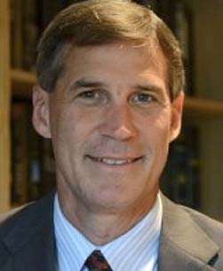

Leadership Team
Santanov Chaudhuri
An avid solar enthusiast, Santanov Chaudhuri is a co-founder of HST Solar. Santanov brings
specific experience as a former solar power developer himself. He founded one of the first solar
power developers active in one of South Asia’s solar power tariff schemes and led the process of
trying to procure the right tracking and racking systems to boost IRRs. He founded HST Solar in
the hopes of creating a technology company that could solve the need in the market that he had
faced personally. He has executed over $100m in renewable energy transactions and investments
globally, including in the US, Europe and Brazil. Previously he served as a banker at Goldman
Sachs, where he worked on several pioneering clean energy transactions among other deals. He
brings experience as a Venture Capitalist at Trivella Investimentos S.A., and as an energy hedge
fund investor at Davidson Kempner Capital, a $12B hedge fund. He also brings experience working
for NASA from his time at the GOODS project. Mr. Chaudhuri holds a BS from Yale University and a
MBA from the Harvard Business School.

Rudy Roy
Rudy Roy leads efforts to enable customers around the world to gain higher project returns with
the company’s technology. He brings years of international energy industry and project financing
experience to his role. Prior to joining HST Solar, Rudy worked in marketing and corporate
development at eSolar Inc., building multi-million dollar pipelines of sales of utility-scale
solar trackers in the US, Europe, and Southern Africa. After eSolar, he worked with global
policy makers and multilateral development banks to develop solar markets across Africa, the
Middle East, and Asia. He served as an angel and venture capital investor across several
industries including alternative energy, working on the clean energy team at Blue Run Ventures.
Rudy began his career at NASA designing and deploying autonomous satellite calibration systems
and was named by Popular Mechanics as one of the top 10 Innovators of 2008. He holds a B.S.
degree from the California Institute of Technology.
Advisory Board
General Wesley K. Clark
Former Supreme Allied Commander, NATO
Wesley K Clark is an advisor to HST Solar where he leverages his deep experience in renewable
energy. In 38 years of service in the United States Army, General Clark rose to the rank of
four-star general as NATO’s Supreme Allied Commander, Europe. Clark finished his career as NATO
commander and Supreme Allied Commander Europe where he led NATO forces to victory in Operation
Allied Force. Since retiring from the military in 2000, he has become an investment banker,
businessman, commentator, author and teacher. In September 2003, he answered the call to stand
as a Democratic candidate for President of the United States, where his campaign won the state
of Oklahoma and launched him to national prominence before he returned to the private sector in
February 2004. Clark has chaired several public and private companies, and is a progressive
leader in pursuing energy solutions. His awards include the Presidential Medal of Freedom,
Defense Distinguished Service Medal (five awards), silver star, bronze star, purple heart,
honorary knighthoods from the British and Dutch governments, and numerous other awards from
other governments, including award of Commander of the Legion of Honor (France). He also serves
on the Advisory Board of the Clinton Global Initiative’s Energy & Climate Change, ACORE, and The
Blackstone Group. Clark graduated first in his class at West Point and completed degrees in
philosophy, politics and economics at Oxford University (B.A. and M.A.) as a Rhodes Scholar.
Ed Feo
Chief Operating Officer, Coronal Management
Ed Feo is an advisor to HST Solar where he leverages his deep network and experience in
renewable energy financing and project management. Ed is the COO and a founder of Coronal
Management, a Panasonic Eco-Solutions partner company that develops and funds solar PV projects
in the 250 KW to 20 MW range. Prior to Coronal, Mr. Feo was a co-founder of USRG Renewable
Finance, which arranged the financing for 375 MW of PV projects in multi-year development
programs. He also serves on the boards of a number of renewable energy companies, including
Clean Power Finance, Clean Fund, Sol systems, and EcoPower Capital. Prior to 2010, Ed was the
co-chair of the Global Project Finance practice at Milbank, Tweed, Hadley & McCloy, LLP, where
he spearheaded the development of one of the first law firm practice groups devoted to renewable
energy. Under his leadership, the group closed more than 200 renewable energy transactions for
more than $35 billion in capital, and consistently captured every top ranking presented to law
firms in the industry. He is the recipient of numerous awards, including being named “Attorney
of the Decade” by the National Law Journal, “Top 100 Lawyers in California” by the Daily
Journal, and one of the “Five Most Influential People in Renewable Energy” by
Euromoney/Institutional Investor. He received a Bachelor’s of Arts degree and a Juris Doctorate
from UCLA, and was elected to Phi Beta Kappa, the Board of Editors of the UCLA Law Review and
Order of the Coif.
V. Subramanian
Former Secretary, India’s Ministry of New and Renewable Energy
V. Subramanian is an advisor to HST Solar where he actively guides the executive team on
strategy and regulatory issues. He currently serves as the Secretary General and CEO of the
Indian Wind Energy Association. He retired from the Indian Administrative Service (IAS) as
Secretary in the Ministry of New and Renewable Energy. He played a pioneering role in the
formation of the Generation Based Incentive (GBI) scheme for wind farms implemented on a large
scale. Mr. Subramanian joined the premier IAS (West Bengal Cadre) in 1971. In recognition of his
expertise and experience in dealing with foreign exchange management in India, the Government of
India appointed him an Adviser on Loan and Grant Management to the Government of Mozambique,
Maputo by Commonwealth Secretariat, London for two and half years. During his tenure with the
Ministry of Finance, he dealt with public sector projects in the areas of transport, steel .
mines, fertilizers, welfare, etc., external commercial borrowings, exchange control and
bilateral aid. He has been an Non Executive & Independent Director of Sundaram-Clayton Ltd.
since 2009. Mr. Subramanian holds a B.Com from University of Madras and is a Certified Associate
of Indian Institute of Bankers, Bombay.

David Wenstrup
Former Co-Head of Solar, Clinton Foundation CCI
David Wenstrup is an advisor to HST Solar where he leverages his experience in policy and
industry to guide HST’s industry partnerships around the world. Prior to that, David served,
with Alexandre Chavarot, as the co-head of the solar team at the Clinton Climate Initiative
(CCI). CCI is one of the programs of the William J. Clinton Foundation that advises governments,
most notably in South Africa and California, on solar energy policy, and helps them work with
private industry and financiers to structure and finance their large-scale solar projects. From
1997 through 2008, David was a Partner and Managing Director with Warburg Pincus, where he led
several growth equity and leveraged buyout investments for the firm. David continued to work
with these companies once they were in the portfolio, generally serving as a lead director on
numerous private and public company boards. Earlier in his career, David was a Manager at the
Boston Consulting Group, where he led teams of consultants in strategy and operational
effectiveness assignments. David holds a BS in electrical engineering from Northwestern
University, and earned masters degrees in both management and electrical engineering from the
Massachusetts Institute of Technology.
William Sahlman
Lead Entrepreneurship Professor and Dean of External Relations, Harvard Business School
William Salhman is an advisor to HST Solar where he guides the firm on strategy. He is the
Dimitri V. D’Arbeloff – Class of 1955 Professor of Business Administration at Harvard Business
School. The d’Arbeloff Chair was established in 1986 to support teaching and research on the
entrepreneurial process. His research focuses on the investment and financing decisions made in
entrepreneurial ventures at all stages in their development. Mr. Sahlman has written numerous
articles and two textbooks on topics including entrepreneurial management, venture capital,
private equity, deal structuring, incentives, commercializing science, and the role of
entrepreneurship in the global economy.In April 2011, the National Venture Capital Association
gave Mr. Sahlman The American Spirit Award, which was created in 1999 “to recognize individuals
who have shown outstanding leadership by applying business skills, knowledge, expertise and
resources to make a meaningful contribution to society.” Mr. Sahlman received an A.B. degree in
Economics from Princeton University (1972), an M.B.A. from Harvard University (1975), and a
Ph.D. in Business Economics (1982), also from Harvard.
Dr. Ken Pickar
Former Chairman of Corporate Technology Board, AlliedSignal Aerospace
Dr. Ken Pickar is an advisor to HST Solar where he supports technology R&D and commercialization
processes. He is the J. Stanley Johnson Professor of Mechanical Engineering at the California
Institute of Technology. From 1993 to 1997, Dr. Pickar was Chairman of the Corporate Technology
Officer and Senior Vice President, Engineering and Technology at AlliedSignal Aerospace. Prior
to that role he served as the Manager of the Electronic Systems Research Center for General
Electric Corporation for nine years. At GE Corporate R&D, he was responsible for all electronics
research from semiconductor materials through large medical imaging systems, lighting, radar,
and other product lines. Dr. Pickar also has held management and engineering positions with
Thomas Consulting Group, Signetics Corporation, Northern Research, and Bell Laboratories. At
Bell Laboratories, he worked in the areas of ion implantation and electron beam technology. Dr.
Pickar is a Director at H2Scan LLC, has also been a Director of NeuStar Inc. and served as a
Director of Level One Communications Inc. He has fifty publications, including a review of Beam
Processing and has served on the Technical Advisory Committee of the Council on Competitiveness.
He holds a Bachelor of Science degree, cum laude, Phi Beta Kappa, in physics and math from City
University of New York, as well as a master’s degree and doctorate in physics from the
University of Pennsylvania.